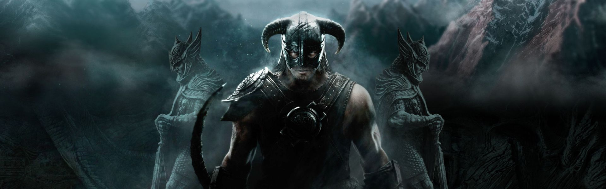
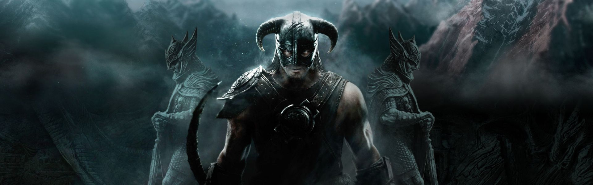

-
Skyrim The Elder Scrolls, é um jogo de RPG que apresenta um mundo rico de personagens e dilemas.
-
Mesmo após 10 anos de sua estréia, continua conquistando e surpreendendo há quem se rende a essa obra prima.
-
Sua total liberdade dentro do jogo a torna uma experiência imersiva, e em conjunto com suas belas paisagens.
-
Winterhold
Winterhold é uma das cidades mais gélidas do game. Além de sua vista espetacular, é aqui também que está a escola de magia de Winterhold.
-
Sovngarde
Sovngarde é considerado o "Paraíso dos Nórdicos" após a morte. Aqui, você encontrará heróis do passado e um céu deslumbrante.
-
Markarth

O que chama a atenção deste lugar é sua ambientação, cujas construções pitorescas estão localizadas entre rochas, cachoeiras e ruínas da raça Dwemer.
-
Blackreachd

Esta é uma caverna imensa que pode consumir horas de exploração pela quantidade de conteúdo que oferece -- de ruínas dominadas por Falmers até lutas desafiadoras com Trolls.
-
Eldergleam Sanctuary
Eldergleam Sanctuary é uma caverna considerada um local sagrado para a deusa Kynareth, seu visual é lindo e único.
-
Solitude

Esta é a capital de Skyrim e uma das maiores cidades do jogo, com direito a um castelo/ fortaleza e a escola dos bardos.